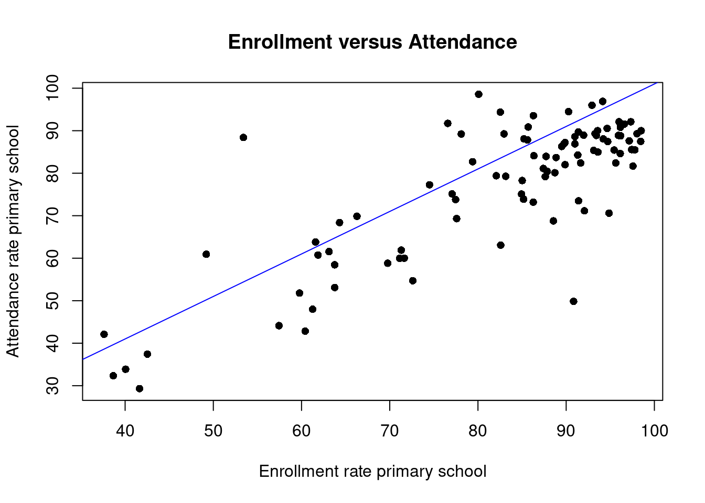
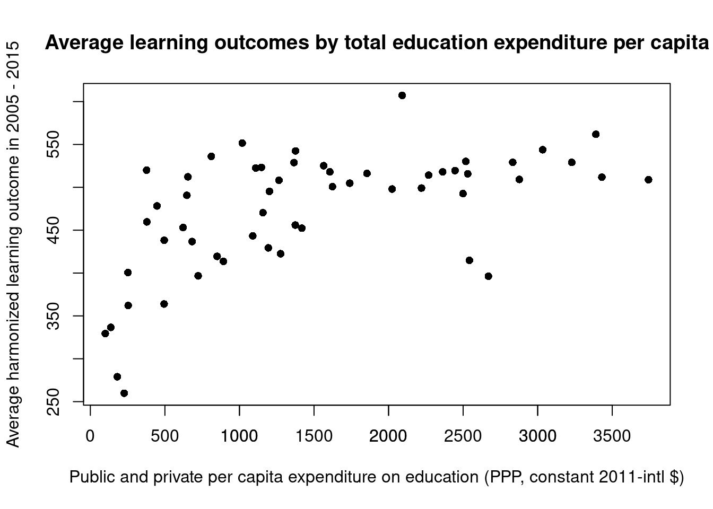

The last two centuries brought enormous advances in the expansion of education around the world. Quantitative measures such as literacy rates, school enrollment, the share of education spending in gdp all point into the same direction: While access to education had been the privilege of a very small elite throughout history, things have changed in the direction of a very broad participation.
This is a result of both economic necessities of modern production as well as of political struggles for human rights and equality. Today education is perceived as a right and it is seen as a government duty to provide broad access to basic education. A certain amount of schooling is even compulsory in most countries, although not all the countries have the capacity to broadly enforce such obligations.
Despite all of these developments and efforts in the expansion of education there are still about 8 % of children worldwide which are not in school. Also progress has been heterogeneous across the globe, with literacy rates among the youth of sub Saharan Africa - for example - still below 50 %.1
1 The data and an interesting analysis can be found in Roser (2021) at https://ourworldindata.org/children-not-in-school
Education policies have thus been widely debated in international policy circles and have spurred debates as well as to seemingly unresolvable controversies about what is needed to further improve education for those who are still behind and precisely which policies would and would not work towards this goal.
For example, the majority view in international policy circles has been that the focus of education policy should be to get children into the class room and provide the necessary teachers. This entails policies to make sure that children have access to a school nearby as well as the free provision of basic education. Once this is assured, according to this approach, the rest will more or less follow automatically.
But enrollment does not automatically mean that all the children enrolled actually attend. For example, we know from the DHS, the demographic an health survey you learned about in previous lectures, that there is a gap between enrollment and attendance in the countries that have the most urgent need for improved education policies. From the surveys we also know that the absence is not necessarily driven by the fact that the children are needed at home.
Look at this graph compiled from DHS data provided by Our World in Data:
Code
library(JWL)plot(enrol_attend_dat$Enrolment, enrol_attend_dat$Attendance, main = ("Enrollment versus Attendance"), xlab = ("Enrollment rate primary school"), ylab = ("Attendance rate primary school"), pch =16)abline(1,1, col ="blue")

In the graph you see the enrolment rate in primary school at the x-axes and the attendance rate on the y-axes. If all children who are enrolled would also attend all the points would be on the blue line, showing all the points where the enrollment rate is equal to the attendance rate. In the data you see many observations where the attendance rate is below the enrolment rate and these observations are quite heterogeneous.
Another aspect that was debated is that enrollment does not necessarily mean that children actually learn something or that they learn at a sufficient quality. This problem of poor learning outcomes in many parts of the globe was demonstrated in many cases.2
2 For details on the evidence you can for instance look at chapter 4 in the excellent book by Banerjee and Duflo (2012)
Does this mean these policies are wrong, as their critics claim. They point out that there is no point in all this educational supply if there is no demand for it, taking lack of attendance and lack of sufficient learning outcomes as evidence. If there were demand, these critics argue, supply would follow and the demand arises by itself as soon as there are high enough returns to education.
Why can’t controversies like these not simply be resolved by looking at the data?
5.1 Correlation does not imply causation
Many data sources we have just rely on education policy outcomes somebody has observed and recorded, so called observational studies. For instance, there is a large literature, mainly from before the mid 1990ies in education research, which tried to answer the following question: Do increased financial resources for public schools improve educational outcomes as measured by standard education achievement tests?
A look across countries would - for instance - give the following picture.
Code
plot(expenditure_outcome_dat$Expenditure, expenditure_outcome_dat$Outcome, main = ("Average learning outcomes by total education expenditure per capita"), xlab = ("Public and private per capita expenditure on education (PPP, constant 2011-intl $)"), ylab = ("Average harmonized learning outcome in 2005 - 2015"), pch =16)axis(1, at =seq(500, 3500, by =500))

Indeed a study by Larry Hedges (1994) confirmed patterns like these. There is strong evidence that education spending and educational outcomes are positively correlated. Remember our discussion of measuring the relation between two variables in section 3.5?
But does this evidence support the conclusion that there is a causal relation between increased educational spending and student outcomes? There is a straightforward reason why this can not be the case.
We compare very different students or schools across countries in the scatter plot we produced before. In the study by Larry Hedges (1994) the variables that were related were students from different households across different schools. In the plot we show here it is students from different households accross different counties. For the general point we want to make here, this is immaterial. What matters is that simply comparing outcomes of students across countries or students across schools with different levels of spending does not tell us whether the different spending levels are causal for the variation in outcomes we observe. There may be many other differences between countries and students that are shaping this relationship.3
3 There are whole websites documenting examples where two variables are highly correlated but it is obvious that there can not be a causal relation. These examples are quite funny. One site you can find for example here: https://tylervigen.com/spurious-correlations
Statisticians have summarized this observation in the mantra that “correlation does not imply causation”. If we want to establish a causal relation from data we need to work harder.
5.2 What does it mean that a variable is “causal”?
When you ask a doctor today about the risks of smoking, he will usually give you a warning and advise against it. One of the arguments will be that the evidence shows that smoking causes lung cancer.
But assume you have been a smoker and now come into the unfortunate situation that you are diagnosed with lung cancer. How do you know that your lung cancer occurred, because you were smoking and you would not have got lung cancer anyway, perhaps for an entirely different reason?
It took the medical profession decades to accept the causality of smoking of lung cancer? The many studies that were undertaken on this subject since the 1930es usually compared people who smoke with non-smokers and tried to take conclusions about the effect from this comparison. In this comparisons the smokers came out badly, showing among many other things higher incidence of lung cancer. So many studies together established a strong correlation between smoking and lung cancer. If smoking cause lung cancer, this would be an explanation of the association between smoking and lung cancer. But this evidence is only circumstantial. There could be some hidden factor - so called confounding factor - which makes people smoke and also makes them get lung cancer. In this case there would be no point in quitting smoking.
The famous statistician Sir R.A. Fisher doubted the causal role of cigarettes for lung cancer and suggested possible confounding factors. Epidemiologists conducted careful studies that accumulated evidence that these confounding factors were not plausible. Over time the evidence taken together convinced the medical community that smoking is indeed causal for lung cancer. But causal here has a meaning that takes into account the unavoidable variability that underlies real life.
The statistical notion of causation or causality is not deterministic. If statisticians say there is evidence that smoking is causal for lung cancer it does not mean that every smoker will end up with lung cancer. It does also not mean that lung cancer can occur only if you are a smoker. It rather means that among the group of smokers lung cancer will occur more often. Thus we can not use statistical methods to establish causation in a specific case. The only thing we can possibly establish by data is that smoking increases the proportion of times lung cancer will occur in a population.
This has two important consequences for what needs to be done if we want to find out what causes what. We need to intervene, that is consciously change a variable, and perform experiments. But since we are in a situation of uncertainty we need to intervene more than once, to establish strong enough evidence.
For this reason much of research in medicine and epidemiology today relies on evidence gained from so called controlled experiments. Let us explain next what the ideas behind such an approach is. These ideas have also been extended to other field, like the research on what works in policies attempting to improve education and to other fields.
5.3 Controlled experiments
5.4 Field trials for early polio vaccines in the US in the 1950ies
Let us take an example from medicine first. Suppose a new drug is found and we would like to introduce it as a medication that can be prescribed by doctors to their patients.
The basic idea of testing the effectiveness of the medicine is comparison. An experiment is designed in which the medicine is given to a treatment group. But there are other subjects that are not treated and form another group, the control group. Then the responses of the two groups are compared. The assignemt of subjects to both groups should be random and the experiment should be run double blind: Neither the subjects nor the researchers who measure the response should know who was in the control group.
The key of randomization in this protocol is that it keeps the two groups equal except for the treatment. Then, if you measure different outcomes you can conclude with some confidence that the observed difference must be the result of the treatment. This would then establish causality.
One of the first epidemiological studies implementing these ideas was a randomized controlled experiment to show the effectiveness of a vaccine against polio in the US in 1954 . It was conducted by the Public Health Service and the National Foundation for Infantile Paralysis (NFPI).
The field trial was conducted in select school districts among the children in the age group most vulnerable. Children could, however, only be vaccinated with their parents consent, so only children whose parents agreed to the vaccination could go into the treatment group. Since parents with higher income would were more likely to consent to treatment. This biases the design against the vaccine, since polio is a disease of hygiene. Children in more hygienic surroundings have less exposure to mild cases of polio in early childhood. This prevents the generation of antibodies which protect them against severe infections at a later age.
Many experts recognized the flaw in the design. The assignment to treatment and control was not random and thus the treatment and control group were systematically different. The idea, however, is that both groups should be as similar as possible except for treatment. If the two groups differ to some factor other than treatment this factor my confound or get mixed up with the effect of treatment.
To exclude the bias in assignment introduced by parental consent in the NFPI design, it was suggested that the control group has to chosen from the same population as the treatment group using an impartial chance procedure. Such an approach is called randomized controlled.
The idea of double blindness was also already used in a new improved design. The children in the control group were given an injection of salt dissolved in water rather than the vaccine, a so called placebo. During the experiment therefore the subjects did not know whether they were in the control group or in the treatment group. Also the doctors were not told which group the child belonged to and neither knew those who evaluated the responses.
A subsequent program evaluation published in a scientific journal (Francis (1955)), showed the bias in the NFPI study in comparison with the randomized controlled double blind experiment:
Code
RCT <-data.frame(Group =c("Treatment", "Control", "No consent"), Size =c(200000, 200000, 350000), Rate =c(28, 71, 46))NFIP <-data.frame(Group =c("Grade 2 (vaccine)", "Grades 1 and 2 (control)", "Grade 2 (no consent"), Size =c(225000, 725000, 125000), Rate =c(25, 54, 44))library(knitr)# table on the leftkable(RCT)# table on the rightkable(NFIP)
Randomized Trial
Group
Size
Rate
Treatment
200000
28
Control
200000
71
No consent
350000
46
NFPI study
Group
Size
Rate
Grade 2 (vaccine)
225000
25
Grades 1 and 2 (control)
725000
54
Grade 2 (no consent
125000
44
Results of the 1954 polio vaccine trials
The two tables show the results of the randomized trial design with the NFPI design. The size of groups and the rates of polio cases per 100.000 in each group are shown in the columns Size and Rate.
In the randomized controlled trial the vaccination cut the polio rate from 71 to 28 per hundred thousand. The NFPI study - by contrast - shows a reduction from 54 to 25 per hundred thousand. The source of the bias which accounts for the difference was confounding. The NFPI treatment group contained only only children whose partents consented to the vaccination. However the control group contained also children whose partents would not have consented. Therefore control and treatment group were not comparable.
5.5 School subsidies for the poor: The Mexican progresa poverty program
Use article by Schultz in the JDE: Illustrate the core elements of a RCT again in this case.
6 Observational studies
6.1 How do randomized controlled trials differ from observational studies?
6.2 Labor market consequences of schooling: Data from Indonesia
Use article by Esther Duflo in AER to show what is needed to establish causality in an observational study.
Banerjee, Abhijit, and Esther Duflo. 2012. Poor Economics: A Radical Rethinking of the Way to Fight Global Poverty. Public Affairs.
Francis, Thomas. 1955. “An Evaluation of the 1954 Poliomyelitis Vaccine Trials - Summary Report.”American Journal of Public Health 45: 1–63.
Larry Hedges, Rob Greenwald, Richard Laine. 1994. “Does Money Matter? A Meta-Analysis of Studies of the Effects of Differential School Inputs on Student Outcomes.”Educational Researcher 3 (23): 5–14.